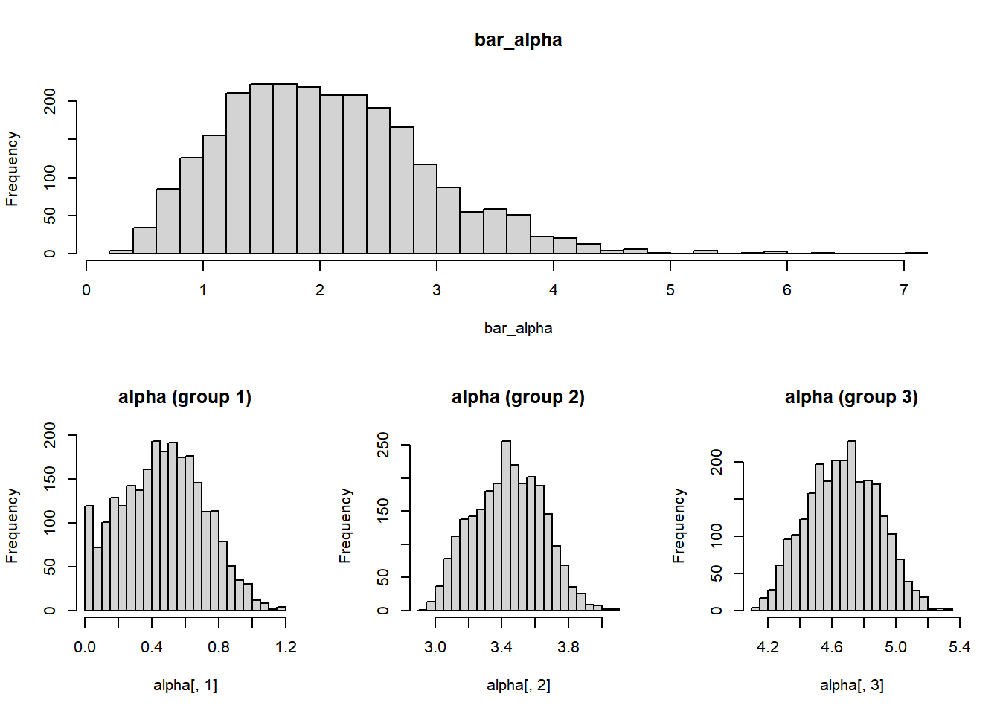
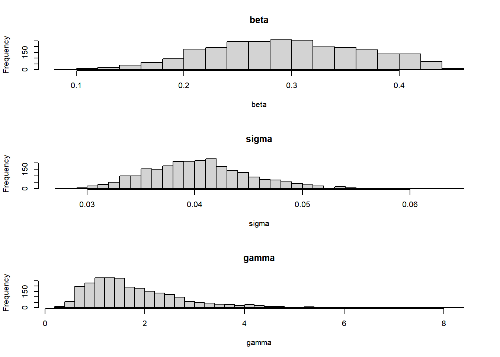
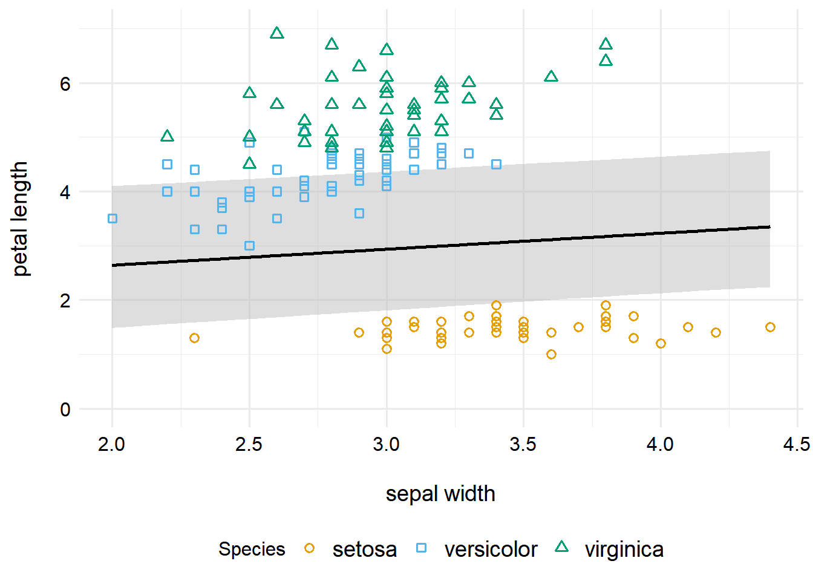
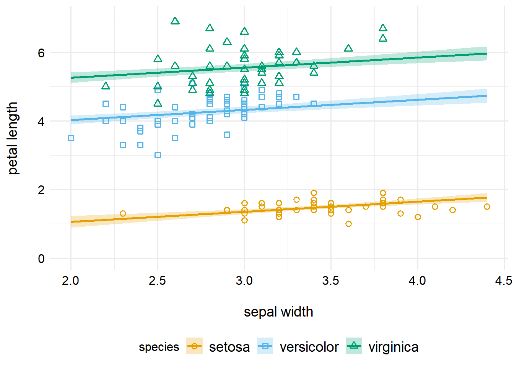

If you’re anything like me, when you got predictions from a brms model with a CI before, you probably thought. How can I do this manually, making it much more error prone and tedious? Well, here’s the answer! Maybe.
Author
Zane Billings
Published
August 22, 2022
Two negative Abbot BinaxNOW Covid-19 antigen test cards on a dark wooden table, next to a kitchen timer shaped like a chicken.
The backstory for this blog post
Like most of my personality traits, my propensity to get into the weeds with every project I engage with is both a strength and a weakness. It really depends on the circumstances, I guess. Recently I’ve been working with my colleague (Dr.) Yang Ge on one of his virus modeling projects. The analyses for this project all used Bayesian linear mixed-effects models, and while I know a decent amount about linear models, I don’t know very much about Bayesian…anything.
Of course knowing that I work best get slightly more work done under pressure, my mentor Andreas thought it would be a good idea for me to reproduce Yang’s work using the rethinking package, which forces the user to write parametric bayesian models out in much more detail than brms does. After months of work and a few more months of quiet contemplation, I have decided to forgive Andreas for this.
The low-down, I guess, is that brms is much more convenient for people who know what they are doing, but it is much easier to make mistakes or make accidental unplanned assumptions. As I am not one such person who knows what they are doing, I looked at Yang’s brms code and said “uhhhh…okay.” So we (mostly Yang and Andreas, but sometimes me since I took like four math stats classes or whatever) spent some time writing out the probability models, and then I started implementing those in rethinking. Fortunately, the rethinking syntax is almost exactly like the normal syntax for writing out probabilistic models.
Long story short, after a bit of struggling (as one does), I got the models to fit and I had gigabytes and gigabytes of posterior samples saved to my hard drive. And then I had to figure out how to get the posterior mean and credible interval estimates.
brms and credible intervals (backstory part 2)
That should be easy, right? Or so I thought, in my hubris. For a fixed-effects only model, we would just take the sample mean and use the empirical quantiles to construct a CI—as an avid bootstrap user, I’ve done this plenty of times. However, the random effects make this a bit more complicated. If you build your model with brms, the package writers have written the excellent predict.brmsfit() and posterior_pred() and similar functions that calculate the credible intervals and handle random effects for you. Of course, I was not using brms, so for me this was not an option. I had a matrix full of numbers to my name and nothing else.
While I love the rethinking package for its quick interface with Stan, I note that the rethinking::PI() function for getting intervals using the quantiles of the samples does not abstract random effects away for the user. Personally, I think this is a good thing—I am never trustworthy of software that I do not understand.
One of the biggest annoyances I had during this project was that there are no other references explaining how you calculate these CIs by hand! I checked Statistical Rethinking, Data Analysis Using Regression and Multilevel/Hierarchical Models, AND BDA3. Either I don’t know what I’m looking for, or the explanation for calculating these CI’s just isn’t in any of those. If anyone can recommend a book that covers this material better, PLEASE get in touch with me!
So, I started with one of the world’s best-ever blog posts by Andrew Heiss. I have had the pleasure of meeting Andrew once, but that was before I read this blog post, so I didn’t get to tell him in person how this blog post saved my career, cleared my skin, fertilized my crops, etc. (Maybe not, but it sure was helpful.)
So, now that I’ve spent a lot of time rambling (another one of my personality traits that is sometimes a strength but often not), I’ll get to the actual tutorial.
Who this guide is for
I thought I should start by borrowing from Andrew, who was borrowing from Solomon Kurtz. I’ll make these assumptions.
You’re familiar with R and the tidyverse. I plan to do most of this in base R, but if it’s more convenient I’ll switch to tidy-style.
You’re at least passingly familiar with Bayesian parametric probability models. If you’ve had a probability theory course (or know the equivalent material), I hope this will be understandable.
You have passing familiarity with random effects. Nothing too deep here, but I’ll be building a model with a random intercept and adaptive priors, as described by McElreath in Chapter 12 of Statistical Rethinking.
The actual tutorial that everyone came here for, I assume
So, here’s a brief outline of what I’ll cover in this tutorial.
Fitting an easy model using the rethinking package. This model will have a random intercept. If you’re looking for models with more than one random effect, I’m not sure I can help you, as I haven’t painstakingly worked through that yet! So if that’s you, use this guide at your own risk.
I’ll show how to get the posterior samples from the model. Then I’ll walk through manual calculations of the four types of credible intervals discussed in Andrew Heiss’ blog post above.
Hopefully I’ll refit the model with brms, this might come a bit later after this is posted. Depends on how fast I can absorb Yang’s brms knowledge from his code. That way we can check and see that my answers are more-or-less correct.
Enough messing about, let’s get started!
Fitting a model with rethinking
Example data and model
For this type of simple one random-intercept model, I’ll use the iris dataset that everyone is familiar with. If this doesn’t work out how I want, I’ll probably come back here and either find a different dataset to use, or generate some fake data that matches the hierarchical model I want to fit (of course with some noise 😁).
But what I’m interested in here is one continuous outcome with one continuous predictor, with a categorical grouping factor. And iris works for that!
For convenience, I’ll call Petal.Length\(y\) (our outcome of interest) and Sepal.Width\(x\) (our predictor, I choose this because I thought the scatterplot looked interesting). We’ll use Species as an indexing variable, \(i\) here. That means we’ll have different estimates for each species in the dataset.
This isn’t a blog post about choosing principled or correct priors, so all I can really say about these is that I made them up after looking at Chapter 13 of Statistical Rethinking. They probably aren’t very good and I should really do better, but that’s not my main focus here, so I won’t. I sort of just picked gamma likelihood and exponential/gamma priors because they are constrained to be positive, and since both our independent and dependent variables must be positive, I think it’s probably fine to force all of these things to be positive. (In reality, only mu has to be positive and the \(\beta\) parameter has to be negative, but since we can plot the relationship and see that there’s a positive correlation, I think this assumption is fine.)
Anyways. Other people know lots more about priors than I do (like the Stan dev team and Michael Betancourt) so you should read their stuff about priors if that’s what you’re curious about. We should also probably do a prior predictive check, but again, I just want to talk about CIs, so let’s move on.
Model fitting in R
I’ll fit the model using rethinking, since I think it’s actually quite a nice interface to rstan, and I like that we basically enter the model just like it looks above. We’ll do some minor data processing so I can be sure that I know which species is which in the output.
Not sure if all the messages from the stan fit will show up here or not, hopefully not. But the model ran for me, I just got some warnings from how rethinking writes Stan syntax. Hopefully those warnings don’t matter much emoji::emoji("smile").
The focus of this post isn’t diagnostics either, but let’s do a quick check.
The effective sample sizes are pretty good, everything is higher than the actual sample size (2500) except for beta. But the ESS for beta is still pretty good. The \(\hat{R}\) values also look good. Every book on using Stan cautions on just looking at these metrics, but if you want something better…look in those books (BDA3, SR, etc.) since they explain it better than I can. So I’ll assume we’re good and finally get to what I actually wanted to talk about.
Estimating the posterior mean and its CI
Now, we need to sample from the posterior.
post <- rethinking::extract.samples(fit, n =2500)str(post)
List of 5
$ alpha : num [1:2500, 1:3] 0.438 0.904 0.213 0.626 0.342 ...
$ bar_alpha: num [1:2500(1d)] 1.91 3.03 2.68 2.41 1.03 ...
$ beta : num [1:2500(1d)] 0.304 0.16 0.372 0.237 0.331 ...
$ gamma : num [1:2500(1d)] 2.3 1.12 2.81 1.34 1.29 ...
$ sigma : num [1:2500(1d)] 0.0427 0.0433 0.0445 0.0371 0.0324 ...
- attr(*, "source")= chr "ulam posterior: 2500 samples from object"
Ok, so we have all of our samples, yay. You can see that we have three alpha vectors in a matrix (one for each species, in the order they showed up in the original dataset). Everything else is a vector of length 2500 (the number of samples we did). Here’s some quick histograms showing the posterior distribution of each parameter.
with(post, {layout(matrix(c(1, 1, 1, 2, 3, 4), ncol =3, byrow =TRUE))hist(bar_alpha, breaks ="FD", main ="bar_alpha")hist(alpha[, 1], breaks ="FD", main ="alpha (group 1)")hist(alpha[, 2], breaks ="FD", main ="alpha (group 2)")hist(alpha[, 3], breaks ="FD", main ="alpha (group 3)")})

with(post, {layout(matrix(c(1, 2, 3), ncol =1, byrow =TRUE))hist(beta, breaks ="FD", main ="beta")hist(sigma, breaks ="FD", main ="sigma")hist(gamma, breaks ="FD", main ="gamma")})

“Type One” – Grand means
Ok, in brms world, this would use the setting re_formula = NA. In short, this is the variance about the mean, ignoring any variations in the random effects. While discussing this with Andreas, I think a very subtle and important point is that the estimate of the mean still includes information from the random effects in this model formulation, but the credible interval will not take variation away from the mean of the random effects into account. I don’t know that much about this formally, but my understanding is that this estimate is still conditional on the random effects. Because we used a “partial pooling” model, our estimate of bar_alpha includes random effects information. (If you read this and you think I’m wrong, please let me know!)
Basically, the way this mean and CI is calculated is by using only the mean of the random effects, ignoring RE-level deviations. So for this example, that means we’ll base our inference on bar_alpha rather than on the three alpha vectors. Now, we can of course do inference on just the bar_alpha parameter, but as Andrew Heiss pointed out in the blog posted I linked earlier, we can’t just interpret it like we can in a frequentist OLS model.
What we’re trying to estimate here is how the expected value of the outcome (petal length) changes along with sepal width. In our model we defined \[\hat{\mu} = \hat{\alpha}_i + \hat{\beta} x,\] where \(x\) is the predictor, sepal width. So what we need to do is use our posterior samples to calculate this mean. In lots of models, we would need to “unlink” in this step also (apply the inverse link function), but here I used an identity link, even though that’s not too common with a gamma likelihood model, to make my life easier.
So we want to get predictions for a bunch of interpolated values of sepal width. We’ll need to do a bit of vector/matrix manipulation to do this in R, so I’ll try to explain that.
First of all, we have our vectors of samples, \(\hat{\beta}\) and \(\hat{\bar{\alpha}}\) (remember for this type of CI, we assume that \(\alpha_i = \bar{\alpha}\)). These are both \(2500 \times 1\) column vectors. Now, our vector of interpolated \(x\) values, say \(\tilde{x}\), will be a \(j \times 1\) column vector, where \(j\) depends on interpolation. Clearly this is incompatible with our other vectors.
However, we can use the outer matrix product to get this in the correct shape. Then, the formula for computing the linear predictor is \[\hat{\mu} = \hat{\bar{\alpha}} \otimes \mathbf{1} + \hat{\beta} \otimes \tilde{x},\] where \(\mathbf{1}\) is a column vector of \(1\)’s with dimensions \(j \times 1\). You can write this without the outer product by using matrix products and transposes, but I personally prefer this notation. If you’re more comfortable without the outer product, this can also be written as
\[\hat{\mu} = \hat{\bar{\alpha}} \mathbf{1}^\prime + \tilde{x}\hat{\beta}^\prime, \] where multiplication is the standard matrix product.
Now, both \(\hat{\bar{\alpha}} \otimes \mathbf{1}\) and \(\hat{\beta} \otimes \tilde{x}\) will be \(2500 \times j\) matrices (and so are conformable for addition) and will look like this:
So, you can see we get a linear predictor (since the link is the identity function) for each element of the matrix. We’ve constructed 2500 samples of the linear predictor evaluated at \(j\) values of the predictor \(x\). (Under the assumption that we don’t care about group-level deviations from the mean. Remember, the whole reason this makes the type 1 CI is that we used \(\bar{\alpha}\).)
Now let’s do this in R code. The first thing we have to do is construct the vector of sepal width values to use. In the code below, you can see that I made a vector that goes from the minimum observed value to the maximum observe value in steps of 0.01. Then, we can construct the \(\hat{\mu}\) (not sure if this is the technically correct notation 😁) matrix using either of the matrix formulas I listed above. In R, %*% is the standard matrix product and %o% is the outer product.
Now that we have these samples, we can summarize them in the typical way. For each column of the pred_vals matrix, you can estimate the sample mean (or other statistics) along with a credible interval. I’ll use an equal-tailed (aka percentile) 89% credible interval, but you could also use the HDPI or whatever else. I also prefer to tidy up the data first before I do anything else.
# Define a function to return the mean and percentile interval as a tibblemean_pi <-function(x, p =0.89) { est <- rethinking::PI(x, prob = p) out <- tibble::tibble(mean =mean(x),lower = est[1],upper = est[2] )return(out)}type_1_summary <- pred_vals |># Convert from matrix to tibble tibble::as_tibble() |># Summarize each column dplyr::summarize( dplyr::across(.cols = dplyr::everything(),.f =~list(mean_pi(.x)) ) ) |># Set names so we can pivot longer easily rlang::set_names(nm = x_tilde) |># Pivot to get in the right form for ggplot tidyr::pivot_longer(cols = tidyselect::everything(),names_to ="sepal_width",values_to ="stats",names_transform =list(sepal_width = as.numeric) ) |># Unnest to get separate columns for mean and CI bounds tidyr::unnest(cols = stats)
Warning: The `x` argument of `as_tibble.matrix()` must have unique column names if `.name_repair` is omitted as of tibble 2.0.0.
Using compatibility `.name_repair`.
Alright, now that we’ve got the data cleaned up and the Type 1 CI computed, we can make a plot to show what this CI looks like.
type_1_summary |>ggplot(aes(x = sepal_width, y = mean, ymin = lower, ymax = upper)) +# This part plots the mean line and CIgeom_ribbon(alpha =0.5, fill ="gray") +geom_line(size =1) +# This part plots the raw data pointsgeom_point(data = iris,aes(x = Sepal.Width, y = Petal.Length, color = Species,shape = Species),inherit.aes =FALSE, size =2, stroke =1 ) +# This plot customizes how the plot looksscale_color_manual(values =c("#E69F00", "#56B4E9", "#009E73")) +scale_shape_manual(values =c(21, 22, 24)) +coord_cartesian(ylim =c(0, 7)) +labs(x ="\nsepal width", y ="petal length\n") + zlib::theme_ms()

Here we can see one of the problems that made me think iris may not be such a good data set for demonstrating these calculations – the average fits the overall global mean well, but it doesn’t describe any of the three groups particularly well. However, after seeing this, I think it might actually demonstrate the shortcomings of the global mean in cases like this. Anyways, we got the CI calculated manually, and now we can move on to the next CI type.
“Type Two” – Group means
The CIs of type two (I hope that the order in Andrew Heiss’ blog post becomes the canonical name for these four types of CIs, since I haven’t seen any official names anywhere else) are group-specific, rather than calculating one overall estimate that combines groups. The formula for calculating these CIs is probably the easiest one to write down:
\[\hat{\mu}_s = \hat{\alpha}_s \otimes \mathbf{1} + \hat{\beta} \otimes \tilde{x},\] where \(s \in S = \{\text{setosa, versicolor, viginica}\}\) indexes the species group. Since we’re using all of the same matrix math as before, I won’t rattle on as much this time. Instead we just need one extra ingredient for these CIs – the incredibly versatile purrr::map()! I KNOW there’s a better way to do this and the way I’m doing it here is weird and inefficient, I just didn’t want to work on it longer and this runs pretty fast.
type_2_summary <-# Get the estimates for each group purrr::map(1:3,~as.data.frame(post$alpha[, .x] %o% ones + post$beta %o% x_tilde) ) |># Set names so that the species value will be calculated correctly rlang::set_names(nm =c("setosa", "versicolor", "virginica")) |># Combine the list of data frames into one data frame dplyr::bind_rows(.id ="species") |># Do the summarization for each species dplyr::group_by(species) |># Now calculate the mean and CI the same as before. dplyr::summarize( dplyr::across(.cols = dplyr::everything(),.f =~list(mean_pi(.x)) ) ) |> rlang::set_names(nm =c("species", x_tilde)) |> tidyr::pivot_longer(cols =-species,names_to ="sepal_width",values_to ="stats",names_transform =list(sepal_width = as.numeric) ) |># Unnest to get separate columns for mean and CI bounds tidyr::unnest(cols = stats)str(type_2_summary)
type_2_summary |>ggplot(aes(x = sepal_width, y = mean, ymin = lower, ymax = upper,color = species, fill = species, shape = species)) +# This part plots the mean line and CIgeom_ribbon(alpha =0.25, color =NA) +geom_line(size =1) +# This part plots the raw data pointsgeom_point(data = iris,aes(x = Sepal.Width, y = Petal.Length, color = Species,shape = Species),inherit.aes =FALSE, size =2, stroke =1 ) +# This plot customizes how the plot looksscale_color_manual(values =c("#E69F00", "#56B4E9", "#009E73")) +scale_fill_manual(values =c("#E69F00", "#56B4E9", "#009E73")) +scale_shape_manual(values =c(21, 22, 24)) +coord_cartesian(ylim =c(0, 7)) +labs(x ="\nsepal width", y ="petal length\n") + zlib::theme_ms()

Note that this model is a so-called “parallel slopes” model. We estimated one common slope, with a different intercept for each group. If we also wanted the slope to vary, we would have needed to make the slope a random effect as well. (And probably specified the correlation between the slope and intercept.)
However, you can see that we get individual credible intervals for each group, as we desired.